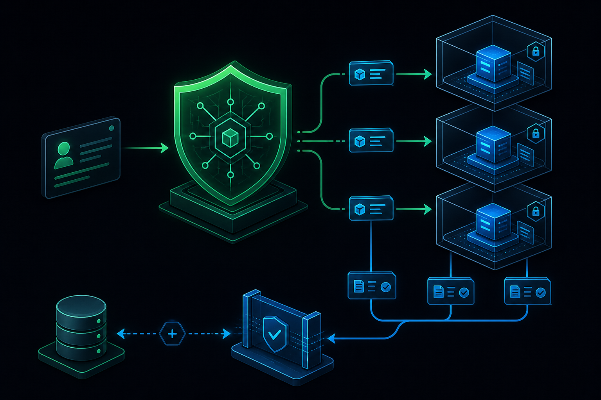
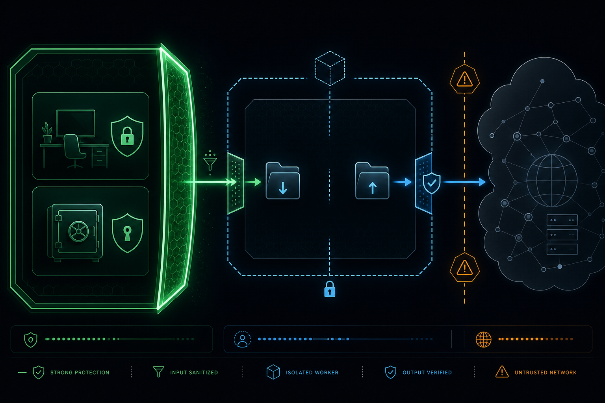

AI systems and security
Policy-Driven Agent Delegation
How to use Cursor or Claude Code as policy controllers for lower-cost and local AI workers without giving every worker your workspace, credentials, or Git history.
Delegate the work, not the authority.
AI agents can browse documentation, write code, run tests, and use command-line tools. That makes a useful workflow possible: one agent can prepare a narrow task for another agent to perform.
It also creates a security problem. If the second agent receives the same workspace, credentials, browser session, Git access, and filesystem visibility as the first one, delegation expands the attack surface instead of reducing work. A careful prompt helps, but a prompt is not an access-control system.
A safer pattern is policy-driven delegation. A trusted coordinator turns a request into a small task contract, a restricted worker performs only that task, and the result is reviewed before it reaches a real project.
Agent-level zero trust
This is an agent-level control pattern, not a claim that Cursor, Claude Code, or any other product is automatically trusted.
Cursor or Claude Code can act as the policy controller because they understand the active project and the user’s request. Their job is to select only the context that fits the scenario, create the task contract, and validate the result. A cheaper cloud model or local model can then act as a dedicated worker for one tightly defined task.
For example, a controller may receive a request to create a parser. It can give the worker only the input format, expected output, a small representative fixture, and acceptance checks. The worker does not need the full repository, prior chats, credentials, personal vault, or permission to commit.
User goal
-> Cursor or Claude Code as policy controller
-> scenario-specific context package and task contract
-> lower-cost cloud model or local model as dedicated worker
-> artifacts and verification evidence
-> controller review and optional human-approved integrationWhy a prompt needs a policy layer
An agent can misunderstand a request, follow harmful instructions in external content, select an unrelated file, or produce an incorrect result with confidence. The risk grows when the task includes shell access, network access, code generation, or Git operations.
Natural-language instructions such as “do not access private files” are not enough. The boundary must be enforced outside the model:
- Give the worker only the information needed for one task.
- Hide the main workspace, personal notes, credentials, backups, SSH configuration, browser data, and Git remotes.
- Use a defined output directory instead of broad write access.
- Treat the worker result as untrusted until a trusted controller validates it.
It is about designing for mistakes, prompt injection, tool misuse, and the normal uncertainty of autonomous systems.
Two trust paths
Policy controller
Cursor or Claude Code can select scenario-specific context, create the task contract, and review returned artifacts. Git or publication remains behind direct human approval.
Zero-trust worker
A lower-cost cloud model, local model, or dedicated code agent researches, generates, analyzes, or tests one bounded task with only sanitized input and a dedicated output location.
The controller role is deliberately small. It does not give any product automatic authority to publish or commit. External workers stay in the zero-trust path and can be useful without becoming workspace administrators.
The task contract
Before a worker runs, the coordinator creates a task contract. This is more than a prompt: it is an inspectable description of what the worker may receive, do, and return.
Task ID
Objective
Approved input files
Allowed public URLs, if network access is needed
Output directory and required artifacts
Selected model and approved fallback
Prohibited actions
Verification checks
Stop conditions
Human review requirementThe contract prevents a vague request such as “research this tool” from turning into unrestricted browsing, local file discovery, or an unreviewed repository change.
The delegation flow

Enforce the filesystem boundary
A separate directory is not isolation by itself. If a worker runs under the same operating-system user and can see the rest of the filesystem, it may still read files outside its intended task.
An enforceable sandbox changes that. A lightweight Linux sandbox such as Bubblewrap can provide a narrow filesystem view:
- Task input is mounted read-only.
- Task output is mounted writable.
- Temporary working state is disposable.
- The worker has a dedicated runtime profile.
- The main workspace, vault, credentials, backups, and browser data are absent from its view.
The important property is not the specific sandbox tool. The restriction must be enforced by the operating system, not requested in a prompt.
A practical first task
Documentation research is a good first delegated task because its goal is easy to define and its output can be reviewed. Cursor or Claude Code can translate a user request into a small context package for a lower-cost or local worker. The worker receives one official documentation root URL, permission to follow directly linked pages on that domain, and a requirement to cite source URLs for factual claims.
| Worker receives | Worker does not receive |
|---|---|
| Official documentation URL and defined article scope | Browser profile, credentials, or API keys |
| One output directory and required artifact names | Main workspace or personal knowledge base |
| Public-web access only when necessary | Git access or publication permission |
The controller then checks that the output contains only the required files, has no unexpected external assets or runtime requests, and keeps its claims within the approved source boundary.
Network access is still a risk

Remote models and online documentation require a network connection. Filesystem isolation does not automatically provide network isolation. Without an egress proxy or domain allowlist, a network-enabled worker may contact more destinations than the task intends.
- Deny network access unless the task requires it.
- Record why each network task is allowed.
- Limit approved sources in the worker prompt.
- Add a domain-level egress allowlist or proxy before sensitive networked tasks.
- Never give a networked worker private data merely because its filesystem view is limited.
Filesystem isolation is a useful control, but it is not a complete network-security solution. “Zero trust” should describe verified controls, not a marketing label.
Validate artifacts, not confidence
The worker’s final message is not the main evidence of success. The returned artifacts are.
For generated code
- Expected files exist with no unexpected extras.
- Automated checks pass.
- No credentials, private paths, or unexpected network calls are embedded.
For research
- Sources remain inside the approved domain.
- Factual claims cite source material.
- The requested format exists and is complete.
Safe fallback rules
Fallback models help with temporary failures, but they should not make a task less accountable. Automatic retry is appropriate only for read-only or idempotent work, such as documentation research or generating a disposable artifact.
- Record the selected model and approved fallback in the task manifest.
- Retry only for timeout, rate limit, temporary provider overload, or server error.
- Stop for authentication or authorization failures.
- Stop for an invalid model identifier or safety-policy block.
- Stop before a task that publishes, submits data, commits code, or changes a real project.
Start with a small policy
- Classify the request as trusted integration or zero-trust worker work.
- Give the worker only a sanitized input package.
- Use an enforced filesystem boundary.
- Require predictable output artifacts.
- Validate before copying anything into a real project.
- Keep Git and publication behind explicit human approval.
This makes lower-cost cloud models, local models, and external agents useful for focused research, prototypes, test generation, documentation, and isolated experiments while keeping authority with the person responsible for the workspace.
What this pattern does not solve
- A sandbox must still be configured correctly.
- Network isolation needs its own controls.
- A worker can still generate unsafe or incorrect code inside its allowed output directory.
- Human review remains necessary for security-sensitive, destructive, or public-facing actions.
Conclusion
Agent-to-agent workflows become practical when authority is separated from execution. Use one trusted coordinator to define policy and review results. Use isolated workers for narrow tasks. Give workers minimal context, an enforceable boundary, and a clear output contract. Then validate artifacts before they reach the real workspace.
That is how agents can work for agents without turning every prompt into a full-access automation account.